seq_hic()
renders Hi-C contact matrices in four interchangeable styles. Each call
produces one seq_plot with a single track in the chosen
style — to combine styles or stitch together regions, call
seq_hic() multiple times and compose the results with seq_resolve(),
%+%, %|% or %__%.
library(SeqPlotR)
#>
#> Attaching package: 'SeqPlotR'
#> The following object is masked from 'package:base':
#>
#> %||%
library(GenomicRanges)
#> Loading required package: stats4
#> Loading required package: BiocGenerics
#> Loading required package: generics
#>
#> Attaching package: 'generics'
#> The following objects are masked from 'package:base':
#>
#> as.difftime, as.factor, as.ordered, intersect, is.element, setdiff,
#> setequal, union
#>
#> Attaching package: 'BiocGenerics'
#> The following objects are masked from 'package:stats':
#>
#> IQR, mad, sd, var, xtabs
#> The following objects are masked from 'package:base':
#>
#> anyDuplicated, aperm, append, as.data.frame, basename, cbind,
#> colnames, dirname, do.call, duplicated, eval, evalq, Filter, Find,
#> get, grep, grepl, is.unsorted, lapply, Map, mapply, match, mget,
#> order, paste, pmax, pmax.int, pmin, pmin.int, Position, rank,
#> rbind, Reduce, rownames, sapply, saveRDS, table, tapply, unique,
#> unsplit, which.max, which.min
#> Loading required package: S4Vectors
#>
#> Attaching package: 'S4Vectors'
#> The following object is masked from 'package:utils':
#>
#> findMatches
#> The following objects are masked from 'package:base':
#>
#> expand.grid, I, unname
#> Loading required package: IRanges
#> Loading required package: SeqinfoSynthetic data
The examples below use the same Hi-C contact simulator carried over
from THEfunc/inst/examples/08_rotated_hic_heatmap.R: every
upper-triangular bin pair (i, j) is assigned a contact
strength of exp(-distance * decay_rate) * lognormal(noise),
then symmetrised by mirroring (j, i).
# Hi-C simulator (THEfunc port).
generate_hic_matrix <- function(n_bins, decay_rate = 0.2) {
ij <- expand.grid(i = seq_len(n_bins), j = seq_len(n_bins))
upper <- ij$j >= ij$i
ij <- ij[upper, , drop = FALSE]
d <- ij$j - ij$i
s <- pmax(0.01, exp(-d * decay_rate) * rlnorm(nrow(ij), 0, 0.3))
upper_df <- data.frame(bin_i = ij$i, bin_j = ij$j, strength = s)
off <- d > 0
lower_df <- data.frame(bin_i = ij$j[off], bin_j = ij$i[off],
strength = s[off])
rbind(upper_df, lower_df)
}
# Convenience: build a `seq_hic`-shaped GRanges for a single region.
hic_region <- function(chrom, start, end, bin_size, decay = 0.2,
seed = NULL) {
if (!is.null(seed)) set.seed(seed)
bin_starts <- seq(start, end - bin_size, by = bin_size)
n <- length(bin_starts)
mat <- generate_hic_matrix(n, decay_rate = decay)
GRanges(chrom,
IRanges(bin_starts[mat$bin_i], width = bin_size),
i_start = bin_starts[mat$bin_i],
i_end = bin_starts[mat$bin_i] + bin_size,
j_start = bin_starts[mat$bin_j],
j_end = bin_starts[mat$bin_j] + bin_size,
score = mat$strength)
}
# Multi-region: per-chromosome intra-chrom matrices, concatenated.
hic_multi <- function(regions, bin_size, decay = 0.2, base_seed = 100) {
parts <- lapply(seq_along(regions), function(k) {
r <- regions[[k]]
hic_region(r[[1]], r[[2]], r[[3]], bin_size,
decay = decay, seed = base_seed + k)
})
do.call(c, parts)
}The four styles at a glance
A single 5 Mb region rendered in each of the four styles. The first
two (full, diagonal) keep both axes genomic;
the last two (triangle, rectangle) rotate by
45° so the y-axis becomes interaction distance in bp.
gr <- hic_region("chr1", 40e6, 45e6, bin_size = 1e5, decay = 0.25,
seed = 1)
win <- GRanges("chr1", IRanges(40e6, 45e6))
style = "full"
seq_hic(gr, windows = win, style = "full")$plot()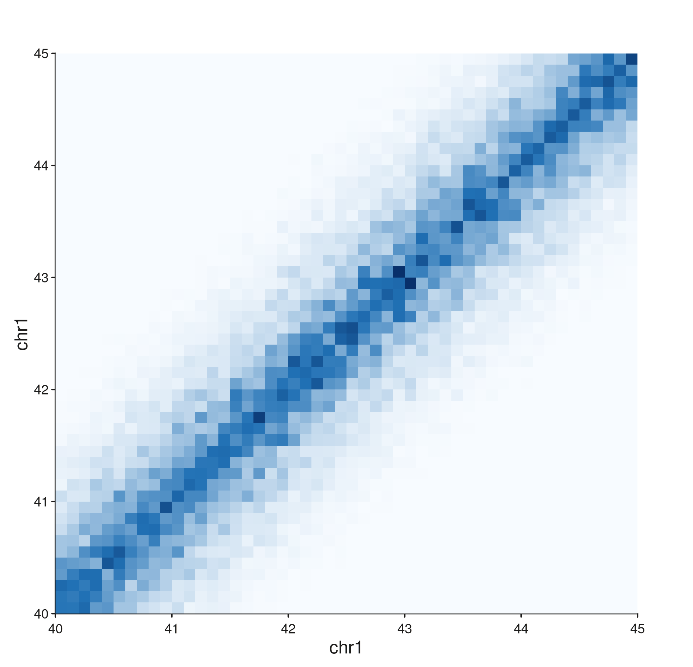
Symmetric square heatmap with genomic position on both axes. This is the canonical view but uses the most space — half the panel is a mirror of the other.
style = "diagonal"
seq_hic(gr, windows = win, style = "diagonal")$plot()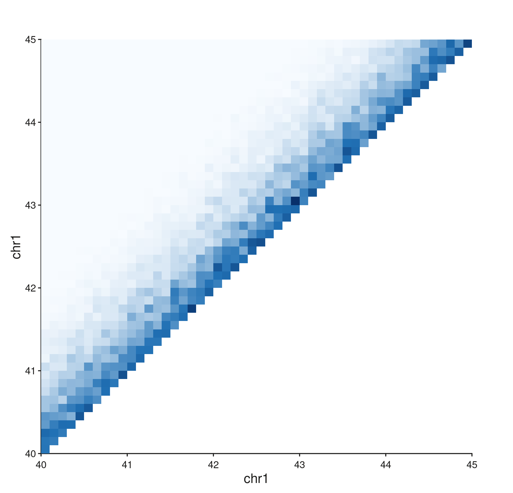
Same coordinate system as "full", but the
lower-triangular mirror is dropped — the diagonal is the dominant
feature.
style = "triangle"
seq_hic(gr, windows = win, style = "triangle")$plot()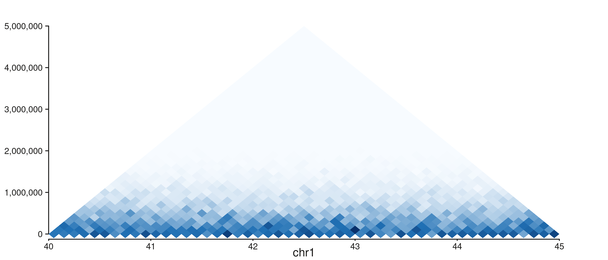
45° rotation: x is genomic position, y is interaction distance in bp. The y-axis tops out at the largest distance present in the data. Most space-efficient — and the standard for browser-style Hi-C tracks.
style = "rectangle"
seq_hic(gr, windows = win, style = "rectangle", max_dist = 2e6)$plot()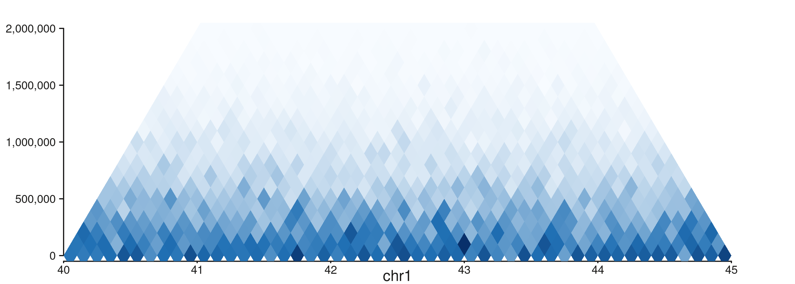
The same rotation, but max_dist caps the distance axis.
Use this when long-range contacts are sparse or out of scope — the
visible rectangle is filled with the biologically interesting
near-diagonal band.
Multiple regions on the x axis
windows accepts a multi-range GRanges —
each range becomes its own side-by-side panel, sharing the same y axis.
Perfect for comparing several loci at a glance.
regs <- list(list("chrA", 0, 3e6),
list("chrB", 0, 3e6),
list("chrC", 0, 3e6))
gr_multi <- hic_multi(regs, bin_size = 1e5, decay = 0.25)
#> Warning in .merge_two_Seqinfo_objects(x, y): The 2 combined objects have no sequence levels in common. (Use
#> suppressWarnings() to suppress this warning.)
#> Warning in .merge_two_Seqinfo_objects(x, y): The 2 combined objects have no sequence levels in common. (Use
#> suppressWarnings() to suppress this warning.)
win_multi <- GRanges(c("chrA", "chrB", "chrC"),
IRanges(c(1, 1, 1), c(3e6, 3e6, 3e6)))Multi-region triangle
seq_hic(gr_multi, windows = win_multi, style = "triangle")$plot()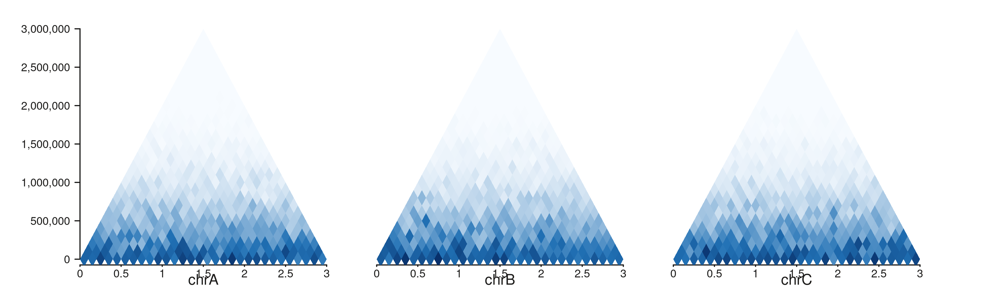
Each chromosome’s contact matrix in its own triangular panel. The distance axis is shared so distance scales remain comparable across panels.
Multi-region rectangle
seq_hic(gr_multi, windows = win_multi, style = "rectangle",
max_dist = 1.5e6)$plot()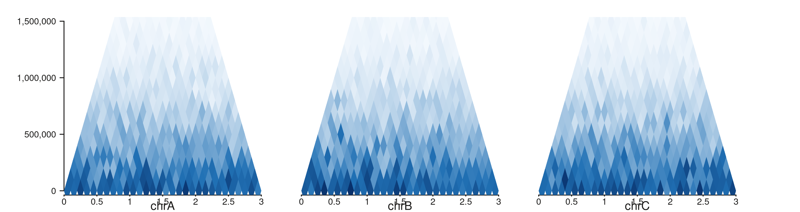
The capped distance axis makes side-by-side comparison particularly clean — every panel uses the same y-extent, so visual “weight” directly reflects contact density.
Multi-region full
seq_hic(gr_multi, windows = win_multi, style = "full")$plot()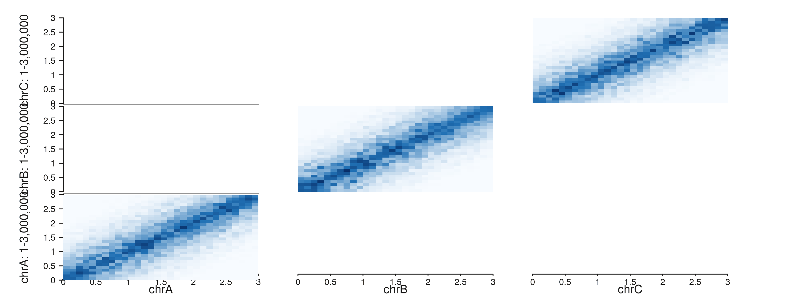
Each panel is the symmetric 2D matrix for that region.
Multi-region diagonal
seq_hic(gr_multi, windows = win_multi, style = "diagonal")$plot()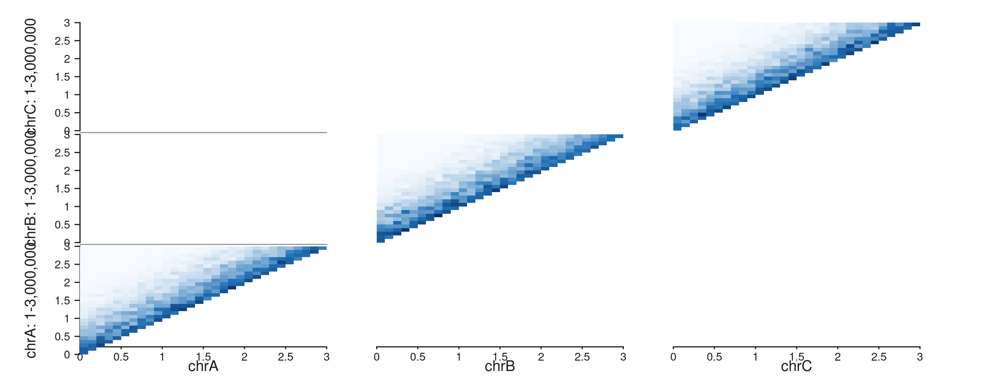
Multiple regions on the y axis
y_windows controls the genomic y-axis for the
full and diagonal styles independently from
windows. By default it mirrors windows (square
matrix). Pass a multi-region GRanges to stack several
y-axis windows vertically — each gets its own sub-panel with axis labels
and a title naming the chromosome and range, and a thin horizontal
separator marks the boundary.
To represent inter-chromosomal contacts, the input
GRanges carries an optional j_chrom mcols
column giving the j-bin’s chromosome (the GRanges seqname is the i-bin’s
chromosome). When j_chrom is absent both bins are taken to
be on the same chromosome.
# x: chr1 (1 region). y: stacked chrA + chrB (2 regions).
# Mixed contact set: chr1×chr1 (intra), chr1↔chrA, chr1↔chrB.
set.seed(7)
n_per <- 250
i_st <- sort(sample(seq(1, 4e6 - 1e5, by = 1e5), n_per, replace = TRUE))
mk <- function(j_chrom) data.frame(
i_chrom = "chr1",
i_start = i_st, i_end = i_st + 1e5,
j_chrom = j_chrom,
j_start = sort(sample(seq(1, 4e6 - 1e5, by = 1e5), n_per, replace = TRUE)),
score = rexp(n_per, rate = 0.4),
stringsAsFactors = FALSE
)
df <- rbind(mk("chrA"), mk("chrB"))
df$j_end <- df$j_start + 1e5
gr_multiy <- GRanges(
df$i_chrom, IRanges(df$i_start, df$i_end),
i_start = df$i_start, i_end = df$i_end,
j_chrom = df$j_chrom, j_start = df$j_start, j_end = df$j_end,
score = df$score
)
win_x_one <- GRanges("chr1", IRanges(1, 4e6))
win_y_two <- GRanges(c("chrA", "chrB"), IRanges(c(1, 1), c(4e6, 4e6)))
seq_hic(gr_multiy,
windows = win_x_one,
y_windows = win_y_two,
style = "full")$plot()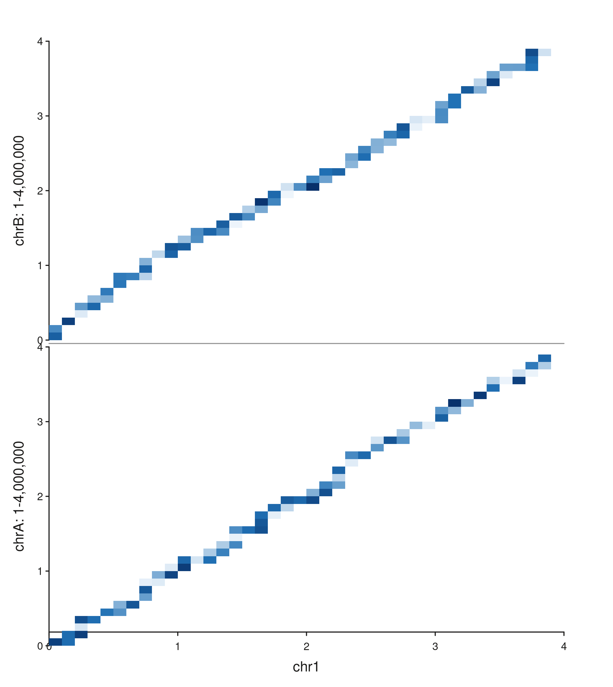
The bottom panel shows chr1 × chrA contacts; the top
panel shows chr1 × chrB. Each y sub-panel has its own
genomic scale, so the two pairs are directly comparable.
Combining x-axis regions into a single panel
By default each x-axis region in windows renders as its
own panel. Setting combine_windows = TRUE concatenates them
into a single virtual panel — useful when cross-window contacts
(e.g. an inter-chromosomal translocation) need to appear in one
continuous view. Each original window keeps its own per-window axis
labels and title, and a thin vertical separator marks the boundary.
combine_windows is implemented at the
[seq_track()] level, so this option is available to every
track type — not just Hi-C.
# Two-region data: intra-chr14, intra-chr5, plus a "translocation"
# band of inter-chromosomal contacts concentrated near a breakpoint.
set.seed(11)
bs <- 1e5 # bin size
mk_intra <- function(chrom, start, end, decay = 0.25, seed_off = 0) {
starts <- seq(start, end - bs, by = bs)
n <- length(starts)
set.seed(seed_off)
mat <- generate_hic_matrix(n, decay_rate = decay)
data.frame(i_chrom = chrom, i_start = starts[mat$bin_i],
i_end = starts[mat$bin_i] + bs,
j_chrom = chrom, j_start = starts[mat$bin_j],
j_end = starts[mat$bin_j] + bs,
score = mat$strength,
stringsAsFactors = FALSE)
}
mk_inter <- function(c1, s1, e1, c2, s2, e2, n = 200, focus = c(0.4, 0.7)) {
i_st <- s1 + round(runif(n, focus[1], focus[2]) * (e1 - s1) / bs) * bs
j_st <- s2 + round(runif(n, focus[1], focus[2]) * (e2 - s2) / bs) * bs
rbind(
data.frame(i_chrom = c1, i_start = i_st, i_end = i_st + bs,
j_chrom = c2, j_start = j_st, j_end = j_st + bs,
score = rexp(n, rate = 0.4) + 0.5,
stringsAsFactors = FALSE),
data.frame(i_chrom = c2, i_start = j_st, i_end = j_st + bs,
j_chrom = c1, j_start = i_st, j_end = i_st + bs,
score = rexp(n, rate = 0.4) + 0.5,
stringsAsFactors = FALSE)
)
}
intra14 <- mk_intra("chr14", 98e6, 100e6, seed_off = 1)
intra5 <- mk_intra("chr5", 170e6, 172e6, seed_off = 2)
inter <- mk_inter("chr14", 98e6, 100e6, "chr5", 170e6, 172e6, n = 250)
all_df <- rbind(intra14, intra5, inter)
gr_combined <- GRanges(
all_df$i_chrom, IRanges(all_df$i_start, all_df$i_end),
i_start = all_df$i_start, i_end = all_df$i_end,
j_chrom = all_df$j_chrom, j_start = all_df$j_start, j_end = all_df$j_end,
score = all_df$score
)
win_combined <- GRanges(c("chr14", "chr5"),
IRanges(c(98e6, 170e6), c(100e6, 172e6)))
combine_windows = TRUE — triangle
The two intra-chromosomal contact decays sit on either side of a boundary, with the cross-chromosomal “translocation” rising as a floating diamond between them.
seq_hic(gr_combined,
windows = win_combined,
style = "triangle",
combine_windows = TRUE,
palette = "reds")$plot()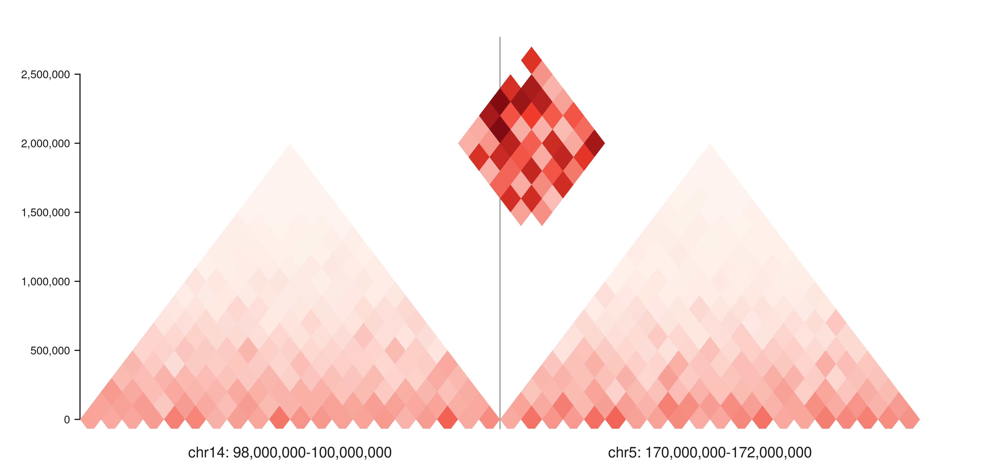
combine_windows = TRUE — full
The same contact set as a 2D matrix. The diagonal lights up in each intra-chromosomal quadrant, with a bright inter-chromosomal block in the off-diagonal quadrants.
seq_hic(gr_combined,
windows = win_combined,
y_windows = win_combined,
style = "full",
combine_windows = TRUE,
combine_y_windows = TRUE,
palette = "reds")$plot()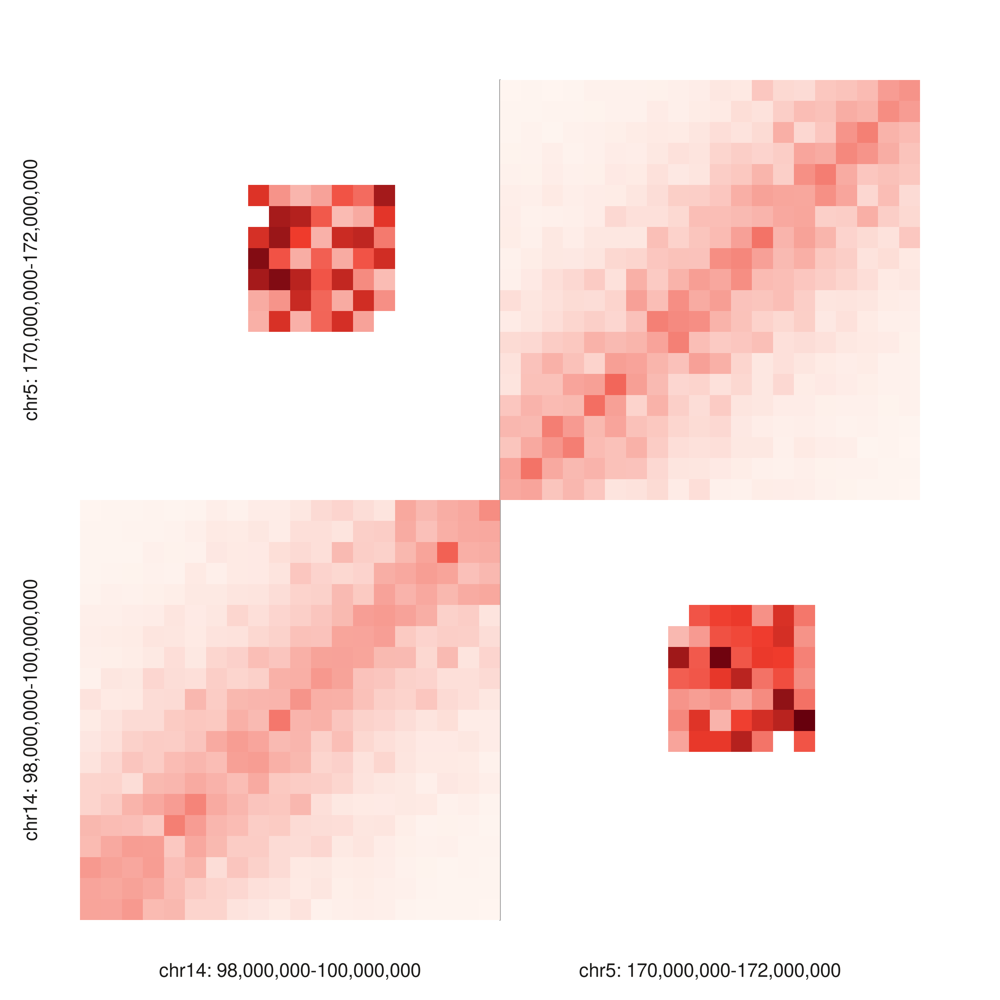
Multiple regions on both axes — composing a region grid
For a 2-D matrix-of-matrices view (every x-region paired with every
y-region), build one seq_hic() per cell and lay them out
with a patchwork string. This sidesteps the need for multi-region y
sub-axes inside a single track and gives full control over per-cell
sizing and labels.
# Two-region intra-chrom data plus a contrived "off-diagonal" view.
gr_A <- hic_region("chrA", 0, 3e6, bin_size = 1e5, decay = 0.20, seed = 11)
gr_B <- hic_region("chrB", 0, 3e6, bin_size = 1e5, decay = 0.30, seed = 12)
win_A <- GRanges("chrA", IRanges(1, 3e6))
win_B <- GRanges("chrB", IRanges(1, 3e6))
layout <- "
AB
CD
"
p_AA <- seq_hic(gr_A, windows = win_A, style = "full",
track_id = "A")
p_AB <- seq_hic(gr_A, windows = win_A, y_windows = win_B,
style = "full", track_id = "B")
p_BA <- seq_hic(gr_B, windows = win_B, y_windows = win_A,
style = "full", track_id = "C")
p_BB <- seq_hic(gr_B, windows = win_B, style = "full",
track_id = "D")
fig <- seq_plot(layout = layout)
fig <- seq_resolve(fig, p_AA, p_AB, p_BA, p_BB)
fig$plot()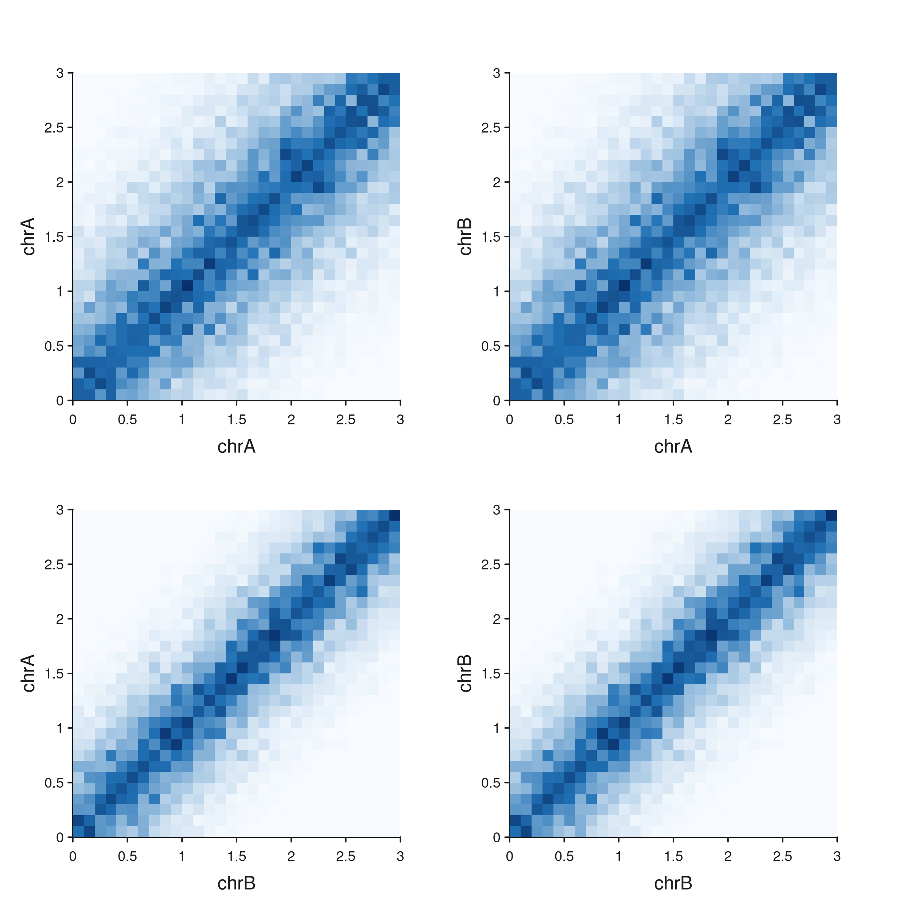
The diagonal cells (top-left, bottom-right) are intra-chromosomal
contact maps; the off-diagonals show the asymmetric
chrA × chrB and chrB × chrA views.
Flipping the axes — flip_x / flip_y
seq_hic() accepts flip_x and
flip_y to mirror an axis. Tick labels follow the
orientation, so the data and the labels stay in sync. The most common
use is plotting a downward-pointing triangle underneath another
track.
Triangle, point down
seq_hic(gr, windows = win, style = "triangle",
flip_y = TRUE)$plot()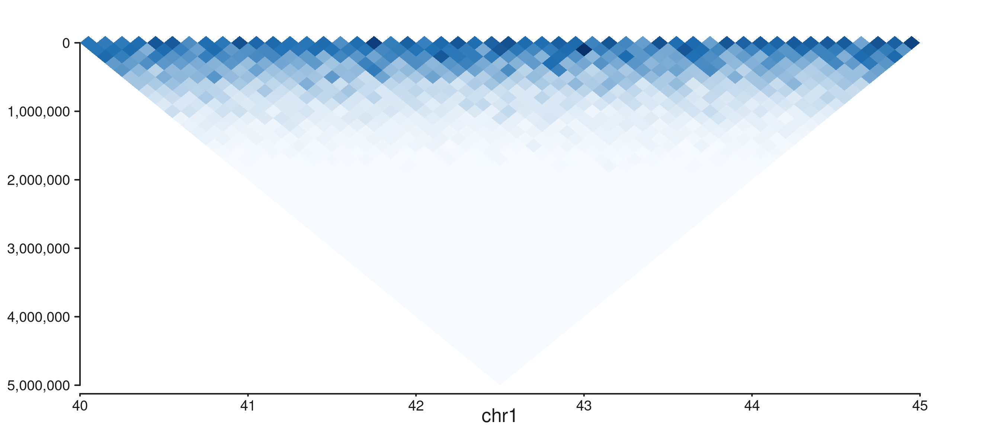
Diagonal, lower triangle
seq_hic(gr, windows = win, style = "diagonal",
flip_y = TRUE)$plot()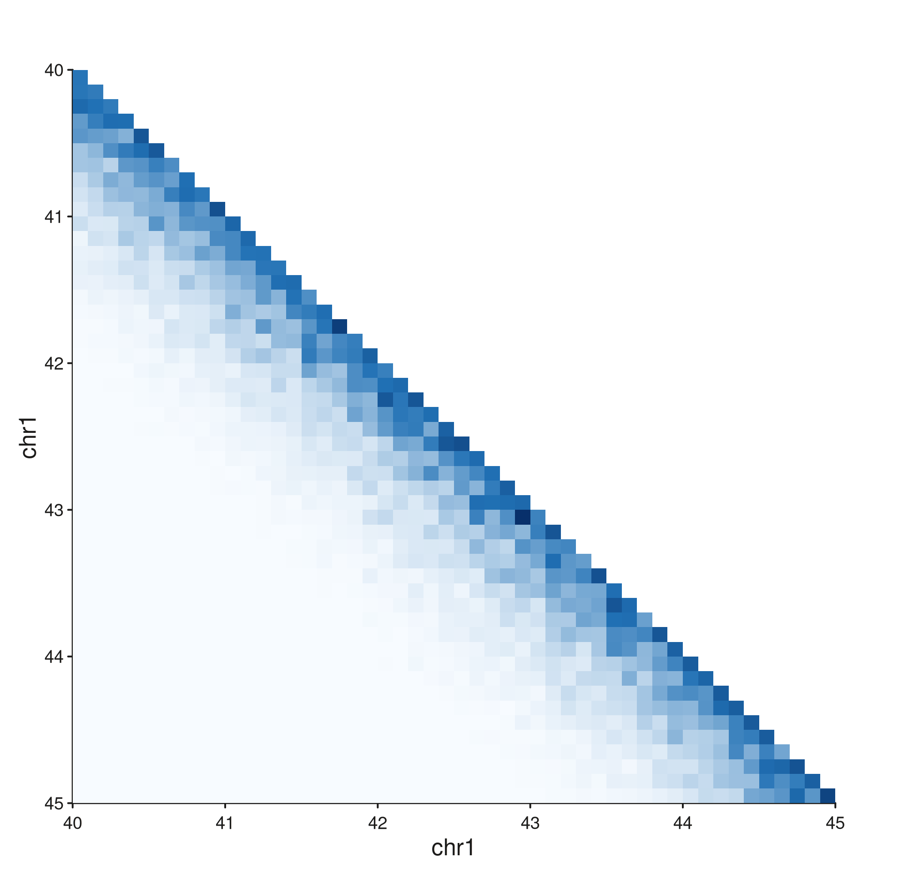
Stacking a normal triangle above a flipped one
A common publication-style layout: two samples shown back-to-back,
the second flipped so its peak meets the first’s. Use
seq_resolve() to compose them in one figure.
p_top <- seq_hic(gr, windows = win, style = "triangle",
track_id = "top")
p_bottom <- seq_hic(gr, windows = win, style = "triangle",
flip_y = TRUE, track_id = "bottom")
seq_resolve(seq_plot(), p_top, p_bottom)$plot()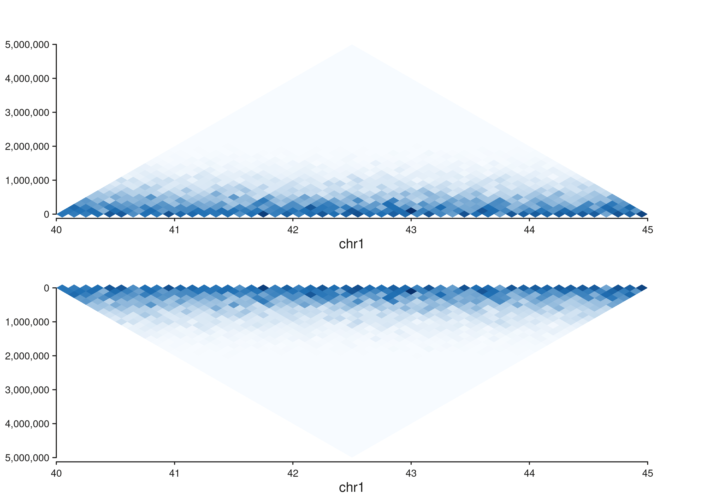
Mixed-style figures via seq_resolve()
seq_hic() is one call per style — but
seq_resolve() makes it easy to combine several Hi-C views
in a single figure. Useful when one style answers one question
(long-range patterns via triangle) and another a different
one (TAD structure via full).
gr <- hic_region("chr1", 40e6, 45e6, bin_size = 1e5, decay = 0.25,
seed = 1)
win <- GRanges("chr1", IRanges(40e6, 45e6))
p_full <- seq_hic(gr, windows = win, style = "full",
track_id = "FullView")
p_tri <- seq_hic(gr, windows = win, style = "triangle",
track_id = "TriView")
fig <- seq_resolve(seq_plot(), p_full, p_tri)
fig$plot()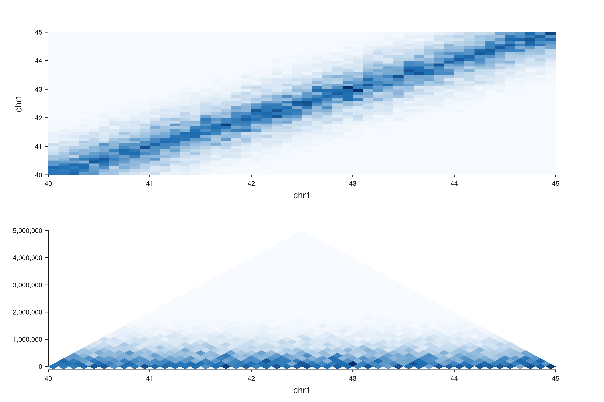
Choosing a style
| Style | When to reach for it |
|---|---|
full |
Detailed per-cell inspection, asymmetric regions on x and y, full symmetric matrix you want to read either direction. |
diagonal |
Like full but with the redundant lower triangle
stripped — a half-matrix view that uses the same coordinate system. |
triangle |
Browser-style overview, stacking with other genomic tracks, and any time interaction distance is the question. |
rectangle |
Large genomes / fine resolutions where only short-to-medium-range
contacts matter. The max_dist cap removes noise from sparse
long-range tiles and lets you compare regions on the same distance
scale. |
Combining Hi-C with annotation tracks
Rotated styles (triangle, rectangle)
compose naturally above annotation tracks because they share the same
x-axis. seq_resolve() or the operator chain stitches them
together:
# Synthetic gene track for the same window.
genes <- GRanges("chr1",
IRanges(start = c(40.5e6, 41.4e6, 42.6e6, 43.5e6, 44.2e6),
width = c(1.2e5, 2.0e5, 8e4, 1.5e5, 9e4)),
gene = paste0("g", 1:5),
type = "exon",
strand = c("+", "-", "+", "+", "-"))
p_hic <- seq_hic(gr, windows = win, style = "triangle",
track_id = "HiC")
p_genes <- seq_plot() %+%
seq_track(data = genes, windows = win, track_id = "Genes",
track_height = 0.4) %+%
seq_gene(map(group = gene, type = type, strand = strand,
label = gene))
seq_resolve(seq_plot(), p_hic, p_genes)$plot()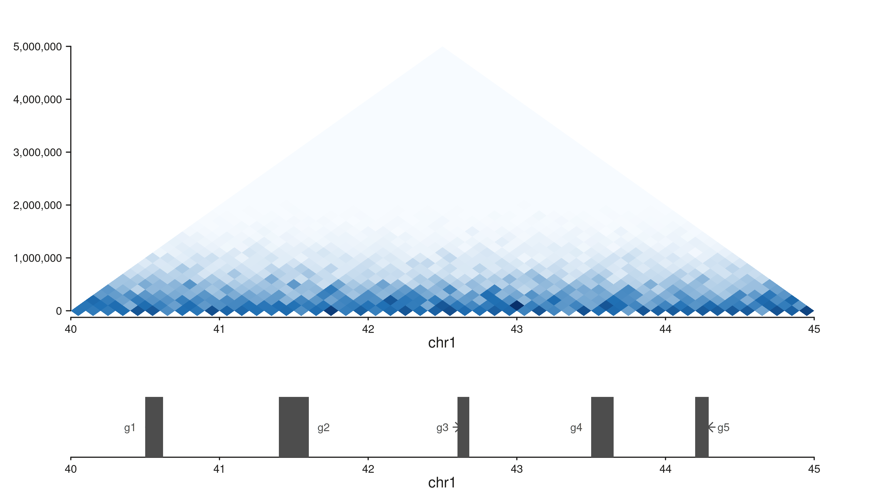